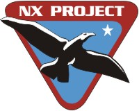

|
Flotta Stellare - Classe NX
|
|
|
|  |
 |
 |
La
classe NX è stata la prima classe di vascelli terrestri a superare la velocità
della luce. Prima di arrivare all'Enterprise, ci sono stati alcuni
prototipi. Per i test del motore Warp 2, progettato dal padre di
Archer c'erano quattro piloti
disponibili: Archer,
Robinson, Gardner
e Duval. I prototipi NX sono navi biposto strutturalmente simili alla
Phoenix. Per il primo test di volo,
svoltosi nel 2143, viene
scelto Robinson e Archer come pilota di
riserva; dopo aver raggiunto l'obiettivo di superare la barriera di Warp 2, il
primo volo di prova è finito con la distruzione della NX-Alpha e con il
magro risultato di vedere la prima navicella di salvataggio avere successo
nell'uscire indenne dal campo warp. È durante questo primo insuccesso che
Archer conosce
Tucker. Dopo l'insuccesso, la Flotta Stellare, sotto la spinta dei consiglieri
vulcaniani, interrompe a tempo indeterminato il programma Warp 2.
Archer non ci sta e, con Robinson e
Tucker, fanno un secondo test di volo
con la NX-Beta e riescono a mantenere un volo costante a Warp 2.5; è
appena prima di iniziare questo volo che
Archer promette a Tucker che,
quando avrà una nave tutta sua, lo prenderà come secondo. Dopo il volo con la
NX-Beta, Archer, Robinson e
Tucker riescono ad evitare la corte
marziale, ma vengono sospesi dal programma di volo per tre mesi. Nel
2145, dopo che le simulazioni
hanno dato i risultati che i Vulcaniani
ritenevano adeguatamente positivi, il test di volo per il progetto Warp 3 è
continuato e la barriera di Warp 3 è stata superata da Duval (First
Flight).
Il Capitano Jefferies è stata una delle persone che ha disegnato la classe NX (Home).
- Il Capitano Jefferies citato tra i disegnatori della classe NX è un
omaggio a Matt Jefferies, direttore artistico della serie e
disegnatore dell'Enterprise,
deceduto nel luglio 2003.
- Il nome di questa classe viene rivelato in Fortunate Son.